- 发帖数量：18 帖（全部为星主「Jason不跪」发布）
- 时间范围（美西时间）：2026-10-19 12:45 – 18:37（PDT），对应北京时间 2026-10-20 03:45 – 09:37
- 筛选依据：只收录晚于上次截止点 2026-10-19T08:33:19.499+0800 的帖子；共 32 张配图，已逐张阅读。
- 读报小提示：今天大部分帖子是 Jason 转述的投行（高盛、花旗、摩根大通）和彭博的研究摘要，所以下面的"背景"里我会尽量先把原文数字讲清楚，再补充你可能没有的概念；凡是我的推测，都会写明"推测"。
今日要点速览
10 月 19 日中国公布三季度 GDP（同比 +4.5%，略超预期），但 Jason 今天整理的材料几乎都在讲同一件事：增长靠出口和工业撑着，居民消费、房地产、收入分配这些"内需"仍然很弱。 高盛、花旗、摩根大通因此都把 2026 全年增速上调到 4.6% 左右，同时不约而同提醒 2027 年更难：居民储蓄率高、消费占收入比例下降（帖 1、3、15），房价只有上海等核心城市企稳、全国仍在下跌（帖 4–6、9）。围绕这条主线，其他帖子展示了它的"后果与应对"：财政吃紧下出口退税被削、汽车出海撞上欧盟配额（帖 7、14），A 股连跌 10 周、对冲基金创纪录地砍科技股（帖 10、11），税务部门开始追缴富豪离岸信托的税（帖 18）；此外还有伊朗断油、马斯克送 SpaceX 股票、人民币支付份额，以及用《雍正王朝》里"清理亏空"的故事来类比今天的"化债"（帖 13、12、16、17）。
逐帖解读
帖 1 · 2026-10-19 12:45（美西）· 标签：#自制图表
：Jason 自己做了两张图，说明"普通居民的收入在掉队、而且手里的钱越来越舍不得花"，这是消费弱的底层原因。读全文收起
帖子原文
整理了历年3季度数据， 1）收入中位数相对于平均数下降，说明处于收入分布中间位置的居民，其收入与总体平均收入之间的相对差距扩大了； 2）消费收入比从接近70%下降到65%左右，意味着平均每获得100元可支配收入，用于当期消费的金额占比下降。 这说明既要提供收入/gdp比重，又要优化收入内部差距。（原文如此，"提供"疑为"提高"） 标签：#自制图表

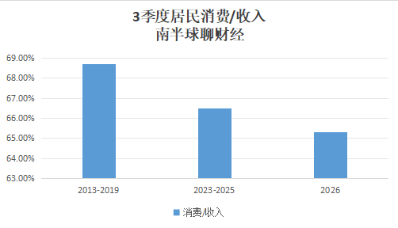
背景与关键数据
- 平均数 vs 中位数：平均数 = 全部人收入加起来除以人数，会被高收入者"拉高"；中位数 = 把所有人从低到高排队，正中间那个人的收入，代表"普通人"。想象一个酒吧里坐着 10 个人，这时进来一位亿万富翁，平均收入暴涨，但中位数几乎不动。所以"中位数 ÷ 平均数"这个比值，越低说明收入分布越不均、越偏向头部。
- 消费收入比：居民人均消费支出 ÷ 人均可支配收入，也叫"平均消费倾向"。它下降，等于储蓄率上升：每 100 元收入，花掉的从约 69 元降到约 65 元，多出来的 4 元被存起来、还贷或者投资了。
- 数据口径：Jason 取的是各年"3 季度"的数字（国家统计局住户调查，推测为前三季度累计口径，原帖没有细说），并把年份分成三组做比较：2013–2019（疫情前）、2023–2025（疫情后）、2026（今年）。
图片解读
- 图 1「3季度居民收入中位数/平均数」：柱状图，纵轴 80%–88%。疫情前（2013–2019）约 87.2%；2023–2025 降到约 83.6%；2026 年约 82.9%。读法：普通居民的收入相当于"平均水平"的比例，由 87% 掉到 83%，说明收入分布向头部集中、或者中间人群收入增长偏慢。
- 图 2「3季度居民消费/收入」：纵轴 63%–69%。2013–2019 约 68.7%；2023–2025 约 66.5%；2026 约 65.3%。读法：同样的收入，花出去的比例连续两个台阶下降。
- 两张图连起来读：中位数/平均数下降（分配更不均）+ 消费/收入下降（大家更爱存钱），叠加就是"总消费需求疲弱"。
为什么重要 / 对市场和经济的含义
- 消费是中国经济最大的"内需缺口"。如果只靠 GDP 总量增长，而普通人的收入占比和消费意愿都在下滑，增长就会过度依赖出口和投资（今天后面几帖反复在讲这点）。
- Jason 的结论是政策要"双管齐下"：既要提高居民收入占 GDP 的比重（分蛋糕时居民多拿一点），又要缩小居民之间的收入差距。这呼应了"十五五"规划里"提高居民消费率"的目标（见帖 15）。
延伸知识
- 平均消费倾向 vs 边际消费倾向：凯恩斯讲的"边际消费倾向"是"多赚的 1 块钱里拿出多少来花"；Jason 这里用的是"平均消费倾向"（总收入里花多少）。收入增长时，如果边际消费倾向低于平均值，平均值就会被慢慢拉低，这是消费占比下降的常见机制。
- 预防性储蓄：当大家担心失业、医疗、养老、房价继续跌，就会"多存点以防万一"。这不是不想花，而是不敢花——所以光发消费券有时见效有限，得靠社保、就业预期等"安全感"工程。
帖 2 · 2026-10-19 13:17（美西）· 标签：#经济数据
：高盛认为三季度 GDP"数字好看"，但好在出口和工业，内需（消费、投资、地产）仍然弱，所以只把今年预测小幅上调，不认为进入了"持续复苏"。（正文最后两段关于"消费占收入比例""宏观与微观感受差距"的话，应是 Jason 自己的补充，与帖 1 呼应——这是我的判断。）读全文收起
帖子原文
高盛： 中国三季度GDP略超预期，9月经济活动普遍改善。但出口强劲、国内最终需求疲弱的结构性失衡仍然显著。房地产继续恶化，消费改善有限，固定资产投资仍处于收缩状态。我们将2026年全年实际GDP增速预测由4.5%上调至4.6%，但并不认为中国经济已经进入持续复苏周期。 9月份工业增加值同比增速从8月份的5.2%提高至5.5%，主要受到出口增长加快的支撑。化工和非金属制品制造业是工业增长改善的主要推动力量，汽车和电气机械行业则形成拖累。9月份单月固定资产投资同比下降7.2%，较8月份的下降10.8%有所改善。9月份社会消费品零售总额同比增长1.1%，高于8月份的0.4%，也高于市场预期的0.5%。这次改善主要来自线下商品销售和餐饮收入。我们认为，今年中秋节落在9月25日至27日，部分居民通过请假延长假期，可能将原本发生在10月份的消费提前至9月份。汽车销售同比下降21.2%，家电销售增速仅1.9%，与食品销售增长6.7%形成鲜明对比。如果居民收入仍在增长，但消费占收入的比例持续下降，那么消费需求疲弱就不完全是收入增长速度的问题，还可能涉及预防性储蓄、收入分配和家庭资产负债表。 如果增长更多依靠出口，而不是居民消费和国内投资，那么宏观增长率与微观经济感受之间的差距可能继续存在。 标签：#经济数据
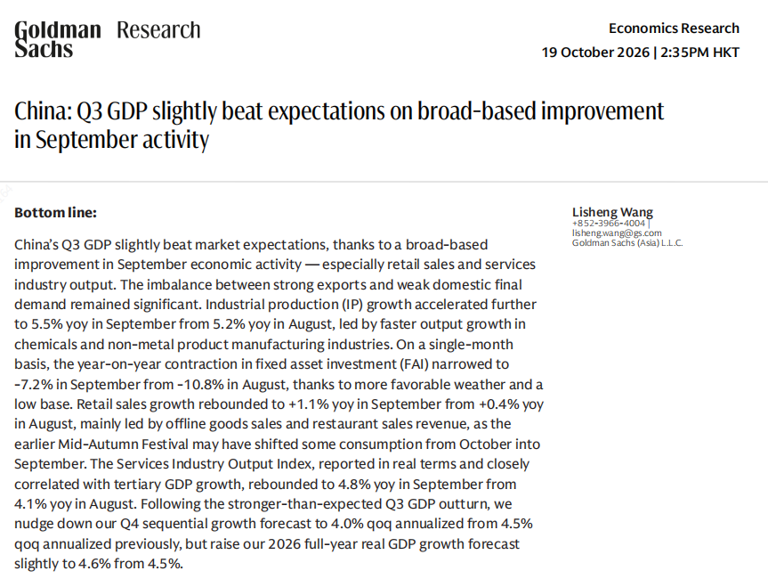
背景与关键数据
- 同比增速（yoy）：和去年同月比。9 月工业增加值 +5.5%（8 月 +5.2%）；社会消费品零售（可以理解为"全社会一个月花了多少钱买东西和吃饭"）+1.1%，比 8 月的 +0.4% 好，也高于市场预期的 +0.5%；单月固定资产投资 −7.2%（8 月 −10.8%），降幅收窄，但仍是负增长。
- 低基数效应：去年同期已经很低，今年哪怕只是持平，同比数字也会"好看"。图片里高盛明确写到，投资降幅收窄部分原因是"天气更有利 + 基数低"。
- 节日错位：今年中秋在 9 月 25–27 日（去年在 10 月初），一部分原本记在 10 月的消费被"提前"到 9 月，所以 9 月零售的好转有一部分是"借来的"，10 月可能回落。
- 结构分化：汽车销售 −21.2%（以旧换新补贴退坡、行业价格战的后遗症，这是我的推测）；家电 +1.9%；食品 +6.7%——说明大件、耐用品在缩，日常吃喝在涨，典型的"消费降级"。
图片解读
- 图片是高盛研究报告第一页（2026-10-19 香港时间 14:35 发布，题目《中国：三季度 GDP 略超预期，9 月活动广泛改善》），除了正文提到的内容，还补充了：服务业生产指数（与第三产业增长高度相关）9 月同比 +4.8%，8 月为 +4.1%；以及高盛把四季度环比折年率预测由 4.5% 下调到 4.0%，同时把 2026 全年预测由 4.5% 上调到 4.6%。意思是：前三季度比预期好，所以全年上调；但四季度的"势头"高盛反而更谨慎。
为什么重要 / 对市场和经济的含义
- 市场总想知道："这是真正的复苏，还是一次性的好数据？"高盛的答案是后者居多：好在出口、制造业、节日提前消费，没好在居民收入、房地产、民间投资。
- 这解释了为什么 GDP 超预期，但股市（帖 10）和房价（帖 4–6）并没有欢呼——宏观总量好不等于企业盈利和居民财富变好，这就是 Jason 所说"宏观增长率与微观感受之间的差距"。
延伸知识
- 净出口拉动：GDP 由消费、投资、净出口三驾马车组成。出口强而内需弱，意味着增长对外部需求（美欧是否加征关税、设配额）极度敏感，这是后面帖 7、14 的伏笔。
- 同比、环比、折年率：同比看"和去年同期比"，环比看"和上个月/上季度比"，折年率是把一个季度的环比增速放大成"如果这个速度持续一年"的数字，方便跨季度比较（详见帖 8）。
帖 3 · 2026-10-19 13:22（美西）· 标签：#经济数据
：花旗说今年目标稳了，所以短期不会有大放水；但 2027 年要面对高储蓄、地产拖累、新经济增长动力见顶三座大山，到时"政策转向"几乎不可避免。读全文收起
帖子原文
花旗： 2026年第三季度GDP同比增长4.5%，高于第二季度的4.3%，符合花旗此前高于市场共识的预测。我们维持2026年第四季度和全年实际GDP增速均为4.6%的预测。即使第四季度GDP同比增速只有4.3%，全年也足以达到目标区间下限。随着全年经济增长目标有望实现，决策层预计会把重点放在落实现有政策上，而不是推出新的刺激措施。但短期企稳并不能消除花旗对2027年及以后经济前景的担忧。特别是高企的家庭储蓄率、房地产投资持续下滑，以及新经济增长动力可能见顶，意味着未来可能不可避免地出现政策转向。 2026年前三季度，中国城镇居民储蓄率达到39.2%。这一储蓄率比过去三年同期平均水平高出约1个百分点。而且，居民仍在继续去杠杆，前三季度银行贷款呈现净偿还状态。居民收入并没有充分转化为当期消费。 标签：#经济数据
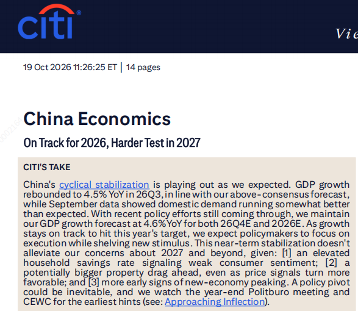
背景与关键数据
- "目标区间下限"：今年的增长目标是一个区间（据我所知下限约为 4.5%），全年只要不低于下限就算达标。花旗算的是：即便四季度只有 4.3%，全年也够。意思是**"达标压力小 → 追加刺激的动力小"**。
- 城镇居民储蓄率 39.2%：储蓄率 =（可支配收入 − 消费）÷ 可支配收入，也就是收入里"没花掉"的比例。城镇居民每赚 100 元只花约 61 元，比前三年同期平均又高了约 1 个百分点。（对比帖 1：Jason 算的是全国口径，消费/收入约 65%，即储蓄率约 35%，两者覆盖范围不同，方向一致。）
- "居民去杠杆、银行贷款净偿还"：杠杆 = 借钱。居民在"提前还贷、不再新增借款"，对应前三季度居民部门贷款整体是负增长——大家在收缩资产负债表。
- "新经济动力见顶"：电动车、光伏、AI 硬件等"新三样/新质生产力"过去几年带动增长，花旗担心它们的增速接下来会放缓。
图片解读
- 花旗报告第一页（19 Oct 2026，共 14 页），标题《中国经济：2026 年按计划，2027 年更难》。"CITI'S TAKE"（花旗观点）：周期性企稳符合预期；前期政策仍在落实，所以暂不加码刺激；对 2027 及以后的担忧有三点：① 家庭储蓄率高（消费者信心弱）；② 地产拖累可能更大，即使价格信号在转好；③ 新经济出现见顶迹象；"政策转向可能无法避免"，并且要盯**年底政治局会议和中央经济工作会议（CEWC）**寻找最早信号。
为什么重要 / 对市场和经济的含义
- 对市场：今年没有"大水漫灌"的预期，短期政策市难期待；真正的转折点要等年底的政治局会议（定调明年政策）和中央经济工作会议。
- 对居民：储蓄率高 + 还贷 = 居民在"修复自己的资产负债表"，这是慢变量，不是发点钱就能改变。
延伸知识
- 资产负债表衰退（Balance Sheet Recession）：日本经济学家辜朝明提出，泡沫破裂后，企业/家庭首要目标从"赚钱"变成"还债"，即便利率很低也不借钱，导致货币政策失灵。今天中国居民"净还贷"和日本 1990 年代很像，也是不少外资行担心的"日本化"路径。
- 政治局会议与 CEWC：中国经济政策最重要的"风向标"。政治局大约每个季度会开一次会分析经济形势（4 月、7 月、12 月的经济部署尤其受关注）；12 月的中央经济工作会议则为下一年定调增长目标和政策基调。
帖 4 · 2026-10-19 13:27（美西）· 标签：#房价 · 带文件（PDF）
：摩根大通编了一个"房地产活动指数"，结论是——政策一再放松，但销售、开工、开发商资金等实际活动依然大幅收缩，只有一线城市相对好一点。读全文收起
帖子原文
JPM： 我们编制的房地产活动指数仍处于低迷状态，尽管房地产政策指数进一步放松，但主要房地产活动指标仍然出现较大幅度收缩。9月二手房价环比-0.26%，较峰值累计下跌23.5%，一线城市的房价继续表现得比其他城市更好，上海和深圳领涨，北京二手住宅价格也有所改善。与此同时，中原地产二手住宅挂牌价格指数和销售经理信心指数均有所下降。 标签：#房价 （附件：JPM 报告 PDF《China: Housing stays weak as time-inconsistency lingers: Mortgage subsidies offer limited lift》。我只能读到正文和报告首页配图，PDF 内容未下载。）
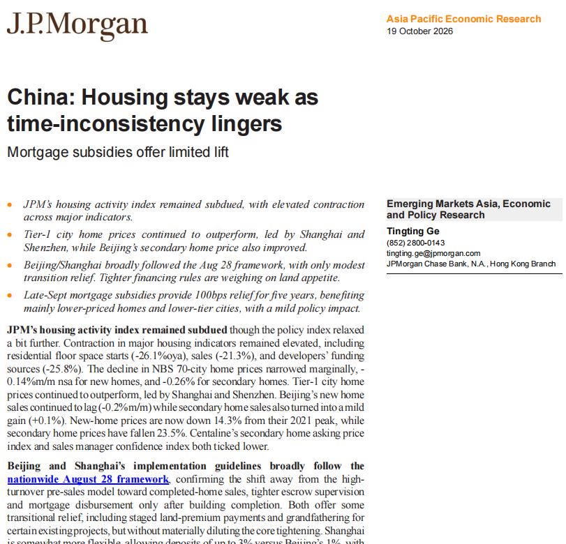
背景与关键数据（结合图片首页）
- 标题里的 time-inconsistency（时间不一致） 是点睛之笔，见延伸知识。
- 图中给出的"硬数据"（同比，yoy）：住宅新开工面积 −26.1%，销售面积 −21.3%，开发商到位资金 −25.8%。三项都在两位数下滑。
- 价格：统计局 70 城新房价格环比 −0.14%、二手房 −0.26%；新房价格较 2021 年峰值累计 −14.3%，二手房较峰值 −23.5%；北京新房销售环比 −0.2%，二手房销售环比小幅 +0.1%。
- 政策：① 北京、上海的实施细则基本沿用"8·28 全国框架"，核心是从"高周转预售模式"转向"现房销售"，加强预售资金监管、竣工后才发放按揭，辅以土地款分期缴纳、对部分存量项目"老项目老办法"等过渡性缓冲，但"并没有实质性稀释核心收紧"；② 9 月底的按揭贴息：5 年期内每年减轻 100 个基点（1 个百分点）利息，主要惠及低总价房和低线城市，政策效应"温和"。
- 其中"Tighter financing rules are weighing on land appetite"：对开发商融资的收紧压低了他们拿地的意愿。
图片解读：图片是 JPM 报告第一页（19 Oct 2026，亚太经济研究，作者 Tingting Ge），左侧是要点，下方是对政策与数据的段落说明，没有图表，但是上面的数字是全帖最扎实的"硬数据"。
为什么重要 / 对市场和经济的含义
- 地产在中国曾占 GDP 约四分之一（含上下游），也是居民财富的大头。新开工、销售、资金这三项同时 −20% 以上，意味着地产投资对 GDP 的拖累还没结束，也解释了帖 8 中"房地产是主要拖累"。
- "政策放松、实际收缩"的背离，说明问题不在价格本身或贷款利率，而在预期（买房人不信房价会涨、开发商不敢投）。
延伸知识
- 时间不一致性（Kydland–Prescott，2004 年诺奖）：政府今天说"我会支持房价"，但明天出于其他目标（比如防风险、挤泡沫）可能改变做法。大家知道这一点，就不会完全相信今天的承诺，所以政策效果打折。通俗类比：爸妈说"考好了就带你去迪士尼"，但你知道他们过几天可能又会说"最近太贵了下次吧"，你就不会为此拼命学习。
- 预售制 vs 现房销售：预售制是"房子没盖好就开卖，用购房款盖房"，开发商可以用别人的钱滚动开发（高杠杆、高周转），代价是烂尾风险；现房销售意味着开发商得先垫钱盖完再卖，对资金要求高得多，能压低杠杆，也会让开发商更少拿地、少开工。
帖 5 · 2026-10-19 13:31（美西）· 标签：#房价
：花旗押注"核心城市房价 2027 年拐头向上"，理由是上海已经由负转正、租金在涨、库存少；三四线则被几年都消化不完的库存压住。读全文收起
帖子原文
花旗： 2027年可能成为三个最核心城市房价的转折点；上海二手房价格已于2026年9月恢复同比正增长。根据国家统计局70城房价指数，上海二手住宅价格2026年9月同比上涨0.8%，而2026年1月还同比下跌6.8%。中原地产数据显示：上海二手房价格2026年初至今上涨5%。北京二手房价格年初至今上涨1.8%。上海租金年初至今上涨4.5%。深圳租金年初至今上涨1.1%。一线城市二手房挂牌数量持续下降。这些证据越来越支持核心城市房价正在企稳、未来可能上涨的判断。 为什么只看好核心城市？使用克而瑞80城数据，统计已取得预售许可但尚未售出的新房库存，包括已竣工和在建住宅。一线城市库存消化周期约14个月，而三四线城市达到约48个月。意味着完全不同的供需关系。在一线城市，如果新土地供应继续减少、开发周期维持两三年，未来新房供应可能逐渐收紧。但在三四线城市，即使开发商停止大规模拿地，已有库存也可能需要很长时间才能消化。 标签：#房价
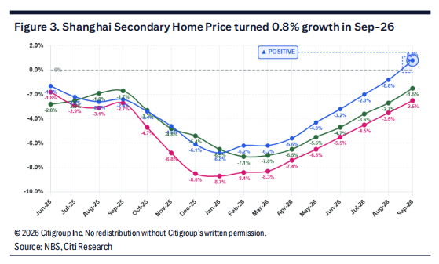
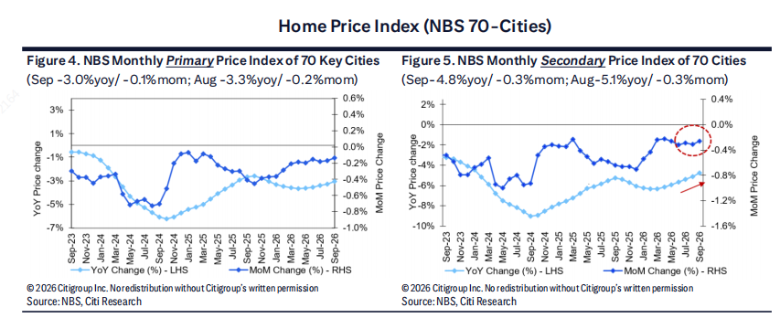
背景与关键数据
- 上海二手房同比 +0.8%（2026 年 9 月），而 2026 年 1 月还是 −6.8%——八个月里同比从 −6.8% 翻到 +0.8%，这是一个很清楚的"拐点"。
- 其他数据：中原地产（私营机构，数据来自真实成交）显示上海年初至今 +5%，北京 +1.8%（另一家投行帖 9 里引用的是 +1.6%，两家口径略有差异）；上海租金 +4.5%、深圳 +1.1%；一线城市二手房挂牌量持续下降（卖家少了、抛压减轻）。
- 去化周期（库存消化周期）：把"已有预售证但没卖掉的新房库存"除以平均每月销量，得出"按现在的速度卖多久能卖完"。一线 ≈ 14 个月，三四线 ≈ 48 个月。一般认为 12 个月上下是相对均衡的水平，超过 24 个月就明显过剩。
图片解读
- 图 1（Figure 3）：上海二手房价格 9 月转为 +0.8% 增长。横轴 2025 年 6 月到 2026 年 9 月，纵轴是同比涨跌幅。图里有三条线：最亮的蓝线是上海，2025 年 6 月约 −1.3%，一路探底到 2026 年 1 月前后约 −6.5%，然后持续回升，最后冲到 +0.8%（图中标注"POSITIVE"）；另外绿线（最后约 −1.5%）、粉线（最后约 −2.5%）走势类似但略低，图中看不清图例（推测是同口径下的其他城市或指数，原图没有明确标注）。读法：一线城市价格同比跌幅大幅收窄，上海率先转正。
- 图 2（Figures 4–5）：统计局 70 城房价指数。左图新房：9 月同比 −3.0%、环比 −0.1%（8 月分别为 −3.3% 与 −0.2%）；右图二手房：9 月同比 −4.8%、环比 −0.3%（8 月 −5.1%、−0.3%）。浅蓝线是同比（看左轴），深蓝线是环比（看右轴）。右图红圈和红箭头标出：同比降幅在连续收窄（−9% 左右的谷底→−4.8%），但环比仍在 −0.3% 左右，没有真正转正。读法：全国层面"跌得慢了"，但还没"涨起来"。
为什么重要 / 对市场和经济的含义
- 如果核心城市真的触底，对居民财富效应、银行抵押资产质量、地方土地财政都是正面信号——因为核心城市的房子占居民地产财富的大头。
- 同时也强调了分化：好房子/好地段与全国大多数城市完全是两个市场。投资上"买整个中国房地产"不再成立，要区分城市和资产。
延伸知识
- 同比、环比与拐点：判断趋势转折时，环比最先变（"这个月比上个月"），同比后变（因为要和一年前比，包含了去年的跌幅）。所以图里同比还是负的，环比先稳了，才是可靠的"拐点"证据之一。
- 库存周期与供需：如果新供给（土地→开工→竣工）长期低于需求，价格就会在几年后"被迫"反弹，这是花旗对核心城市的逻辑；而三四线的问题是人口流出+库存太大，需求端没法撑起来。
帖 6 · 2026-10-19 13:35（美西）· 标签：#房价
：高盛比花旗保守得多：全国二手房价格仍在下跌且略有加快，租金9月也回落，只预计一二线城市未来 1–2 年"趋稳"，不是"上涨"。读全文收起
帖子原文
高盛： 中国70城二手房价格仍然下跌，而且跌速略有加快。二手房价格环比年化跌幅从8月的1.5%扩大到9月的1.7%。而第三方数据所反映的过去一年价格跌幅仍达到5%—8%。预计未来1—2年一二线城市房价可能趋于稳定，但目前仍没有足够证据证明全国房地产价格已经进入持续上涨周期。 标签：#房价 9月50个重点城市的平均住宅租金，在连续三个月环比上涨后重新下降。一线城市平均租金也出现环比下降。不过，9月租金降幅小于2024年和2025年同期的季节性跌幅。100城住宅租金收益率环比基本持平。
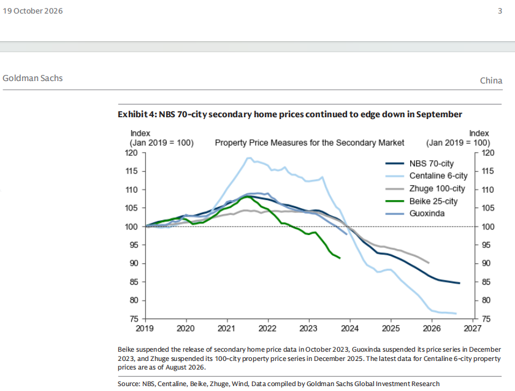
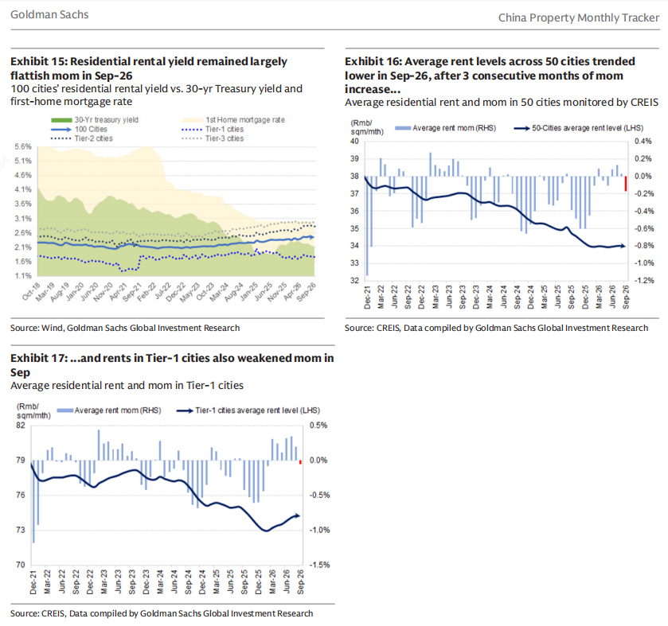
背景与关键数据
- 注意口径："环比年化" 是把月度环比折成年率，高盛的 −1.7% 是折年率（可能经过季节调整），和帖 4 JPM 的 −0.26%（单月、未调整）不能直接对比，别以为是冲突。
- 第三方数据（如中原、贝壳、中指等）反映的过去一年跌幅是 5%–8%，比官方 70 城数字更大——不同指数口径不同，见帖 9。
- 租金：50 城平均租金在连续三个月环比上涨后，9 月重新下降；一线城市也降，但降幅比 2024、2025 年同期的季节性回落要小——意味着"季节性因素之外，需求仍有韧性"。租金收益率（年租金 ÷ 房价）100 城环比基本不变。
图片解读
- 图 1（Exhibit 4）：二手房价格指数（2019 年 1 月 = 100），五条线：NBS 70 城（深蓝）、中原 6 城（浅蓝）、诸葛 100 城（灰）、贝壳 25 城（绿）、国信达（蓝灰）。都从 100 起步，大约在 2021 年见顶：中原 6 城最高约 118，然后断崖式下跌，到 2026 年 8 月约 76.5（较峰值约 −35%）；统计局 70 城最平缓，目前约 84.5；诸葛（2025 年 12 月停更）约 90，贝壳（2023 年 10 月停更）约 91.5，国信达（2023 年 12 月停更）约 98。图注提醒：不少民间指数已经停止发布，数据越来越少。 读法：同样是"二手房价格"，不同指数差了 8 个点以上（84 对 76），说明"官方指数偏温和、成交样本指数跌得更深"。
- 图 2（Exhibit 15）：住宅租金收益率 vs 长期国债收益率 vs 首套房贷利率。横轴 2018 年 10 月到 2026 年 9 月，纵轴 1.1%–5.6%。浅黄色面积是首套房贷利率（约 5.5% 一路降到约 3.1%）；绿色面积是 30 年期国债收益率（目前约 2.1%–2.2%）；蓝线是 100 城租金收益率，缓慢升到约 2.4%–2.5%；虚线是一/二/三线城市（一线最低约 1.8%，三线最高约 3%）。读法：房贷利率和租金收益率之间的差距在缩小，但房贷利率（≈3.1%）仍高于租金收益率（≈2.5%）。
- 图 3（Exhibit 16）：50 城平均租金，柱子是环比（右轴），线是租金水平（左轴，元/平方米/月）：从 2021 年 12 月约 38 一路降到 2025 年底约 34，之后基本走平。图 4（Exhibit 17）：一线城市租金：从约 79 掉到 2025 年底约 73，之后回升到约 74.5–75；最后一个月（9 月）出现小幅负增长，用红色标出。
为什么重要 / 对市场和经济的含义
- 对"房价到底见底没有"这个核心问题，高盛给出的是"一二线可能 1–2 年后稳定，全国没有证据"，比花旗保守。两家大行对同一份数据读出不同的结论，这本身就是信息——共识并不一致，风险在两侧。
- 租金韧性：租金下跌放缓，对"租金/房价"这个房产估值锚是支撑（租金收益率上升时，房价下跌空间会小一些）。
延伸知识
- 租售比 / 租金收益率与按揭利率的"利差"：如果买房的贷款利率（3.1%）高于租金收益率（2.5%），买房等于"每年赔 0.6% 的利息差"，必须靠房价上涨来补偿，这叫负carry（负的持有收益）。2021 年时这个差距是约 3 个百分点（5.5% vs 2.2%），现在已缩到约 0.6 个百分点。这就是为什么很多分析师说"房价离价值回归越来越近"。
- 为什么民间指数停更：数据口径之争+合规敏感，导致可得数据减少，市场更依赖统计局，这会增加"信息不透明"的风险。
帖 7 · 2026-10-19 13:45（美西）· 标签：#政策分析
：一位专家对高盛说，中国汽车业正在被"三面夹击"——国内补贴收缩、海外设限、行业洗牌；出海模式要从"拼价格拼规模"转向"本地化+整合"，但 2027 年销量仍然看涨。读全文收起
帖子原文
高盛： 中国汽车产业正在同时面临国内财政支持收缩、海外贸易壁垒提高，以及行业集中度提升的压力。我们10月15日组织专家电话会议，讨论中国汽车产业政策。专家预计，在外部数量限制模式下，中国汽车企业过去依靠规模、成本优势和价格竞争打开海外市场的模式，可能受到更直接的约束。 专家指出，中国正在逐步降低"新三样"产品——电动汽车、动力电池和太阳能产品——的出口退税。专家认为，这种调整可能反映两方面的政策变化：第一，中国政府面临国内财政压力。第二，中国希望减少对出口产业的过度支持，特别是在国内竞争已经十分激烈的情况下。专家估计，出口退税调整可能给出口企业造成相当于FOB（离岸价格）约4%的财务损失。 专家认为，中国未来可能推进消费税改革。改革方向包括将部分税收征收环节从生产端转向消费端。与此同时，政府可能探索新的电动汽车税收方式，例如：提高公共充电站的充电收费。对纯电动汽车征收按行驶里程计算的税费，以替代传统燃油车相关的燃油税收入。 面对国内外监管风险，专家预计中国汽车产业未来将进一步整合。在第十五个五年规划期间，也就是2026—2030年，行业可能通过兼并重组形成7—10个主要汽车集团。 专家指出，中国汽车企业在欧洲进行本地化生产，可能绕开潜在的混动车进口配额限制。但本地化生产同时受到两方面约束。一方面，欧盟可能提出较高的本地化要求。例如，《工业加速法案》可能涉及除电池之外70%的本地化含量要求，以及股权和技术转让方面的要求。另一方面，中国政府也在关注汽车企业的海外投资。专家认为，单纯依靠KD散件组装（即将零部件运往海外再组装），难以满足欧盟的本地化要求。因此，中国汽车企业可能需要推动更多汽车供应链环节逐步向海外扩展。 专家认为，中国汽车品牌在欧洲的市场份额可能面临隐性上限。目前日本汽车制造商在欧洲的市场份额长期稳定在11%—13%左右。专家预计，从长期看，中国汽车制造商的市场份额可能超过日本汽车企业。但中国品牌能否达到20%的市场份额，仍然面临挑战。 虽然政策压力增加，但专家仍预计：2027年中国国内汽车零售销量同比增长2%—3%。2027年中国汽车出口同比增长约20%。专家给出的理由主要有两个。第一，预计汽车以旧换新补贴政策可能延续至2027年。第二，新能源汽车购置税在2026—2027年为5%，2028年可能恢复至10%的正常税率。因此，2027年可能成为消费者购买新能源汽车的相对有利窗口。 标签：#政策分析
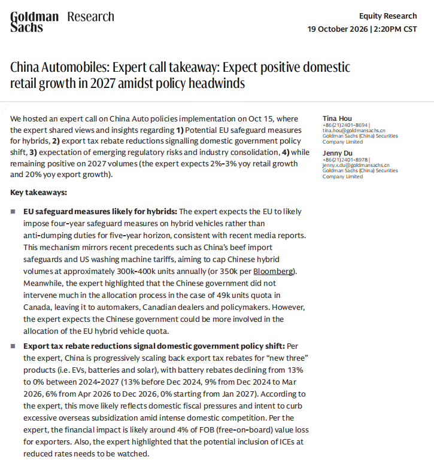
背景与关键数据
- 图片补充的细节（高盛 2026-10-19 股票研究，作者 Tina Hou、Jenny Du，标题《中国汽车：专家电话会要点——政策逆风下预计 2027 年国内零售仍增长》）：
- 欧盟对混动车的保障措施：专家预计欧盟将对混动车实施四年期保障措施（safeguard），而不是五年期反倾销税，机制类似此前中国牛肉进口保障措施、美国洗衣机关税，目的是把中国混动车出口封顶在每年约 30–40 万辆（彭博引用 35 万辆）。参考：加拿大 4.9 万辆配额的分配，中国政府干预不多，主要交给车企、加拿大经销商和政策制定者；但专家预计中国政府在欧盟混动配额的分配上可能更积极。
- 新三样出口退税逐步取消：动力电池出口退税率 13%（2024 年 12 月前）→ 9%（2024 年 12 月至 2026 年 3 月）→ 6%（2026 年 4 月至 12 月）→ 0%（2027 年 1 月起）；估计对出口企业造成约 4% FOB 的损失；还要观察是否会把燃油车（ICE）也以较低税率纳入。
- 其他重点：① 消费税改革，把一部分税收环节从生产端移到消费端，以及探索按里程对纯电车收费，替代传统燃油税（政府要补上"加油税"收入）；② 行业整合：2026–2030 年可能收敛为 7–10 家主要车企集团；③ 本地化：欧盟《工业加速法案》可能要求除电池外 70% 本地化含量及股权、技术转让要求，纯 KD 散件组装不够；④ 品牌在欧洲份额存在"隐性上限"：日系长期稳定在 11%–13%，中国品牌长期可能超过日系，但到 20% 很难；⑤ 2027 年展望：国内零售 +2%–3%，出口 +20%，理由是以旧换新可能延续、新能源汽车购置税 2026–2027 年 5%，2028 年恢复 10%。
图片解读：图片是该研究的第一页，把上面这些要点以"Key takeaways"形式列出，数字（4 万辆、350k、13%→0% 等）都在这张图里。
为什么重要 / 对市场和经济的含义
- 这篇和帖 14（欧洲产能过剩、德国呼吁应对"被低估的货币、补贴、产能过剩"）是同一个问题的两面：中国制造业"产能+补贴+低价"出海，引发欧盟用配额、本地化要求等"数量限制"回应。
- 对中国财政：取消出口退税是财政压力的信号（专家的第一点判断），也是产业政策从"鼓励出口"转向"控制内卷"（第二点）的信号。
- 对资本市场：车企利润率会被退税减少（≈4% FOB）压缩；一线整车厂、电池链公司需要在海外建厂（匈牙利、西班牙、摩洛哥等是常见选项，这是我补充的背景），资本开支上升。
延伸知识
- 出口退税：中国出口货物实行"零税率"——国内生产环节缴过的增值税，出口时退还给企业，保证"不出口税"。降低退税率 = 变相对出口企业加税，出口商要么压缩利润、要么提高海外售价。
- 保障措施 vs 反倾销：反倾销要证明"你在低于成本或低于本国价格倾销"；保障措施只需要证明"进口激增对本国产业造成严重损害"，不论价格公平与否，更容易启动，常以配额或关税形式存在，是 WTO 允许的工具。
- KD（Knock-Down）散件组装：把零部件整套运到海外工厂拼装，主要增值（电池、电机、电控）仍在国内，因此欧盟要求更高的"本地化含量"，逼车企把供应链也搬过去。
帖 8 · 2026-10-19 14:00（美西）· 标签：#经济数据 · 带文件（PDF）
：摩根大通的结论和高盛、花旗一致——"增长回升，但复苏很脆弱、很窄"，而且把这种分化称为"K 型"。读全文收起
帖子原文
JPM： 9月份中国经济重新获得增长动能，但复苏范围仍然狭窄，主要依赖生产、出口和政策支持。第三季度GDP同比增长4.5%，高于摩根大通和彭博市场此前4.4%的预测。但是，增长的构成并不均衡。工业生产改善，零售销售略有回升，固定资产投资却继续收缩。高技术制造业和外需仍然具有韧性，但消费、私人投资和房地产尚未明显恢复。 标签：#经济数据 （附件：JPM 报告 PDF《China: Growth Turns Up, Recovery Remains Fragile: External strength and fiscal support lift momentum》。我只能读到正文和报告首页配图，PDF 全文未下载。）
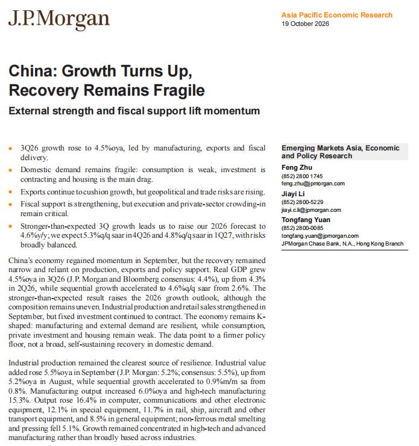
背景与关键数据（含图片首页补充）
- 三季度 GDP +4.5% 同比（摩根大通与彭博共识为 4.4%），二季度是 +4.3%；环比折年率（q/q saar）由二季度的 2.6% 加速到 4.6%。
- 摩根大通因此把 2026 年全年预测上调至 4.6%，并预计四季度环比折年率 5.3%、2027 年一季度 4.8%，风险"大致平衡"。（对比帖 2：高盛把四季度环比折年率下调到 4.0%，两家银行对"下一季是否加速"看法不同。）
- 工业生产：9 月工业增加值 +5.5% 同比（摩根大通原先预测 5.2%，共识 5.5%），环比 +0.9%；制造业 +6.0%、高技术制造业 +15.3%；其中计算机/通信/电子设备 +16.4%，专用设备 +12.1%，铁路船舶航空设备 +11.7%，通用设备 +8.5%；有色金属冶炼加工 −5.1%。读法：增长集中在高技术和先进制造，不是"全面开花"。
- 关键判断（图中原文）：数据反映的是"更稳固的政策托底（policy floor），而不是内需自我维持的广泛复苏"。
图片解读：图为摩根大通报告第一页（要点列表与摘要段），上面这些数字都出自这张图。其中"K-shaped"一词指经济呈现 K 字形分化：制造业与外需向上，消费、民间投资、地产向下。
为什么重要 / 对市场和经济的含义
- 三家大行（高盛、花旗、摩根大通）今天口径惊人一致：数字上调，质量存疑。这意味着对 A 股企业盈利、债券和人民币的判断，不应只看 GDP 增速，要看"谁在增长"。
- 对"政策"的含义：如果复苏依赖出口和财政，一旦外需放缓或财政用力减弱，就缺少接棒的力量——这正是帖 3 里花旗担心 2027 年"政策转向"的原因。
延伸知识
- q/q saar（季环比折年率，季调）：假如一个季度比上一季度增长 1.1%，折成年率约是 4.5%（1.011⁴ − 1），所以"4.6% q/q saar"并不是说"同比 4.6%"，而是"如果按这个季度的速度跑满一年"的速度。它对拐点更灵敏，但容易受季度噪音影响。
- K 型复苏：疫情后美国常用来形容"富人和科技公司上升、低收入者和传统行业下降"，两条线像字母 K 的两条腿。今天用来描述中国"出口制造 vs 内需"的分化也恰如其分。
帖 9 · 2026-10-19 14:07（美西）· 标签：#房价
：同样是"一线城市二手房 9 月价格"，三家机构给出三个不同结论：官方 +0.22%、中原 +0.31%、中指 −0.44%，较峰值的跌幅也从 −16.4% 到 −39.6%——"房价到底跌了多少"取决于你问谁。读全文收起
帖子原文
JPM： 9月，统计局口径，一线城市二手房价格环比上涨0.22%。中原地产口径，上涨0.31%。中指研究院口径，价格环比下跌0.44%，而且跌幅比8月份的0.37%进一步扩大。但上海是唯一一个在中原地产和中指研究院两套第三方指数中都实现上涨的一线城市。 统计局口径，一线城市二手房整体较峰值下降16.4%；按照中原地产口径，下降39.6%。 标签：#房价
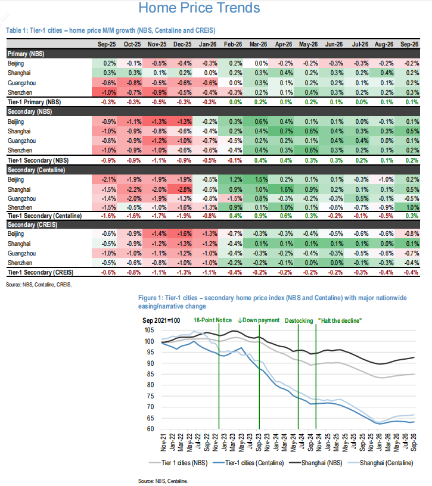
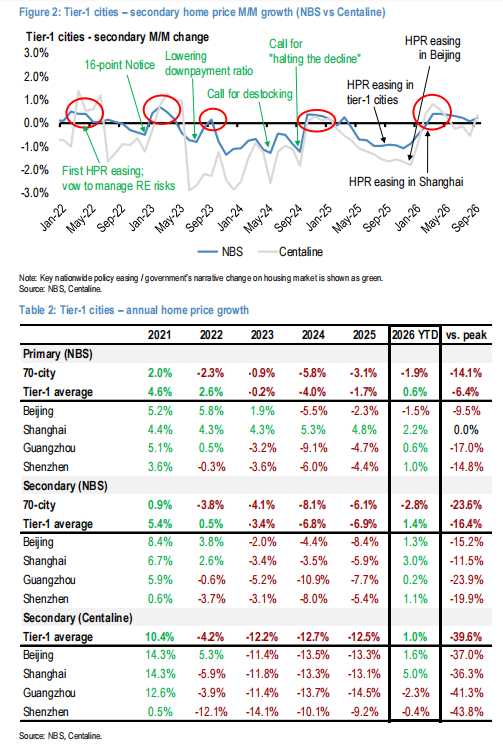
背景与关键数据
- 三个口径：国家统计局（官方，70 城调查）、中原地产（Centaline，基于真实成交数据）、中指研究院（CREIS，中指/CRIC 的价格指数）。
- 一线城市整体较峰值：官方 −16.4%，中原 −39.6%。差了 23 个百分点，是因为官方指数更平滑、有"样本小区+估价调整"，而中原这类成交型指数更"如实"但样本更偏向活跃成交的小区。（一般认为的原因，非 JPM 原文。）
- 上海是唯一在两套第三方指数里都上涨的一线城市——与帖 5 花旗的"上海领先"的论断互相印证。
图片解读
- 图 1（Table 1）：一线城市房价月环比（统计局、中原、中指）。表格按月份（2025 年 9 月 – 2026 年 9 月）和城市（北京/上海/广州/深圳）列出数据，绿色=上涨，红色=下跌。可以看到：
- 一线城市二手房（统计局）：2025 年 9–12 月连续 −0.9% 到 −1.1% 的深红色，2026 年 2 月转为接近 0，3–6 月转正（+0.4%～+0.3%），9 月 +0.2%。
- 一线城市二手房（中指 CREIS）：全年几乎都是红色，9 月 −0.4%。
- 图下方"Figure 1"折线：2021 年 9 月 = 100，标注了"16 点通知""降首付""消库存""止跌回稳"等关键政策节点。统计局口径的上海（黑线）最低只到约 90，目前约 92–93；统计局口径的一线整体（灰线）约 85；中原口径的上海（浅蓝）和一线整体（深蓝）则一路掉到约 62–63，今年只小幅回升到约 66 和 63。 读法：不同指数的"跌幅体感"完全不同。
- 图 2：Figure 2（统计局 vs 中原的月环比，红圈标注政策放松时间点）+ Table 2（年度涨跌幅）：
- 统计局二手房：一线平均 2021 +5.4%，2022 +0.5%，2023 −3.4%，2024 −6.8%，2025 −6.9%，2026 年初至今 +1.4%，较峰值 −16.4%；上海 2026 YTD +3.0%、较峰值 −11.5%；广州 +0.2%、−23.9%；深圳 +1.1%、−19.9%；北京 +1.3%、−15.2%。
- 中原二手房：一线平均 2021 +10.4%，2022 −4.2%，2023 −12.2%，2024 −12.7%，2025 −12.5%，2026 YTD +1.0%，较峰值 −39.6%；其中上海 YTD +5.0%（−36.3%），北京 +1.6%（−37.0%），广州 −2.3%（−41.3%），深圳 −0.4%（−43.8%）。
- 特殊亮点：统计局口径的上海新房价格较峰值 0.0%，也就是已回到历史高点（上海新房有严格限价，价格相对"稳"，这是我的补充推测）。
- 全国 70 城：新房 2026 YTD −1.9%、较峰值 −14.1%；二手房 YTD −2.8%、较峰值 −23.6%。
为什么重要 / 对市场和经济的含义
- 对政策制定：官方指数告诉你"跌幅小、正在稳"，成交型指数告诉你"仍然很深、反弹力度有限"。真实的拐点判断，要看多口径是否同时转正——目前只有上海做到了。
- 对居民资产负债表：一线城市二手房较峰值回撤 16%–40%，意味着大量居民财富蒸发，这是帖 1、3 里"消费占收入比下降"的重要背景（财富效应为负）。
延伸知识
- 指数编制差异：成交型指数（如中原）按"真实成交价"计算，反应灵敏但样本偏；官方 70 城指数通过抽样小区和价格调查，波动较小、有滞后。选哪个看你关注的问题：想知道"现在市场多冷"看成交型，想知道"大范围房价趋势"看官方。
- "较峰值"这种比较的陷阱：不同指数的峰值时点不同（有的 2021 年 8 月，有的 2022 年初），这也会影响跌幅；所以比较时要同时看"起点日期"和"口径"。
帖 10 · 2026-10-19 14:12（美西）· 标签：#A股
：沪深 300 连跌 10 周创历史纪录，较 6 月高点已跌约 17%；国家队 ETF 资金大举流入，在"托底"。读全文收起
帖子原文
bloomberg： 沪深300指数在截至上周五的五个交易日内累计下跌3.4%，将连续下跌纪录延长至史无前例的10周。周一，随着经济数据显示中国第三季度GDP增速超出预期，沪深300指数上涨0.3%。不过，该指数相较于今年6月的高点仍然下跌约17%，正在接近技术性熊市区域。上周，一篮子受到所谓"国家队"青睐的交易所交易基金（ETF），资金净流入规模飙升至今年7月以来的最高水平。中信建投分析师在报告中写道：最新一轮大规模资金流入，为大型机构趁A股市场调整之际建立仓位提供了良好机会，同时也有助于恢复投资者信心、稳定市场预期。 标签：#A股
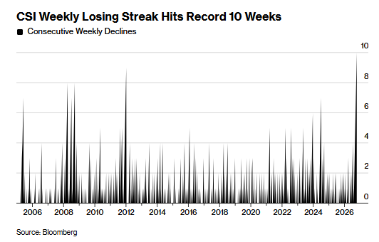
背景与关键数据
- 沪深 300：A 股大盘蓝筹指数。连续 10 周下跌，史无前例；上周五的周跌幅 3.4%；周一（GDP 公布日）仅 +0.3%。
- 技术性熊市：通常指从高点下跌 20% 以上。目前距离高点约 −17%，距离"熊市线"只差 3 个百分点。
- 国家队：指中央汇金等代表政府托底市场的机构资金。它们常通过买入宽基 ETF（如沪深 300 ETF）托住指数。彭博说"上周国家队偏好的一篮子 ETF 净流入创 7 月以来最高"，说明"救市"在进行。
- 中信建投的评论是：大规模资金流入给大机构趁调整"建仓"的机会，并"恢复信心"。
图片解读
- Bloomberg 图表《沪深 300 周线连跌纪录达到 10 周》：柱状图展示每周"连续下跌周数"，从 2005 年到 2026 年。大部分时候连跌 2–5 周；2008 年（约 8 周）、2012 年（约 9 周）出现过明显的高点；最右侧（2026 年末）的柱子冲到 10，是历史最高。读法：现在的跌势在连续性上，已经超过 2008 年全球金融危机和 2012 年那一轮熊市。
为什么重要 / 对市场和经济的含义
- "经济数据超预期、股市却连跌"的错位，是今天主线的另一面：GDP 好在出口和工业（对多数 A 股上市公司盈利贡献有限），内需和地产仍弱，加上海外和估值因素，所以股价没跟着欢呼。
- 国家队托底的信号：它能减缓下跌速度，但不能改变盈利预期；"托而不涨"往往是政策资金和市场分歧的体现。
延伸知识
- 连跌周数的统计学含义：连跌很长时间，往往意味着"卖压持续+买盘缺位"，也容易出现技术性反弹。但历史上长连跌之后涨跌并不固定，看的是背后的驱动因素是否消除。
- 政策底 vs 市场底：政策放出托底信号叫"政策底"，市场真正见底叫"市场底"，两者之间可能隔几个月，今天的国家队资金流入属于前者。
帖 11 · 2026-10-19 14:30（美西）· 标签：#股市
：高盛主经纪商数据显示，对冲基金一周内卖科技股的速度创 2016 年以来最快，但他们的科技股仓位仍然很高，所以这到底是"调仓"还是"撤退"还没法判断。读全文收起
帖子原文
bloomberg： 根据高盛主经纪商业务部门的数据，对冲基金正以至少十年来最快的速度削减科技股仓位。在截至10月15日的五个交易日内，对冲基金削减科技股持仓的幅度创下高盛自2016年开始统计相关数据以来的最高纪录。与此同时，高盛全球银行与市场业务部门发布的研究报告显示，对冲基金的总交易活动规模也出现了近三个月以来最快的下降。减仓速度创纪录，不代表科技股已经被彻底抛弃。高盛数据显示，科技股净配置仍处于过去五年的第90百分位。这意味着即使经历了猛烈减仓，对冲基金的科技股持仓仍高于过去五年约90%的观察值。半导体是AI资本开支周期中最直接受益的领域之一。如果对冲基金集中削减半导体仓位，可能反映出市场对AI投资回报、估值或未来资本开支增速的担忧。这意味着当前抛售既可能是一次快速的风险再平衡，也可能是更长时间仓位调整的开始。仅凭这五个交易日的数据，还不能确认是哪一种情况。 标签：#股市
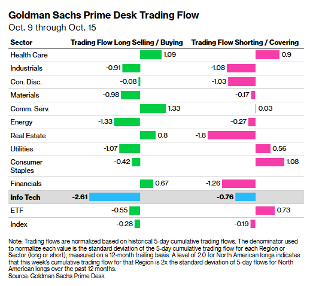
背景与关键数据
- 主经纪商（Prime Brokerage）：给对冲基金提供融资融券、托管、交易执行的大投行（高盛是其一）。因此高盛能看到客户（对冲基金）整体的买卖情况，这类"资金流向"数据是了解对冲基金动向的重要窗口。
- "创 2016 年以来最快的科技股减仓"：针对 10 月 9–15 日这一周，规模以"标准差倍数"计，是历史最高。
- "净配置仍处于过去五年的第 90 百分位"：把过去五年每一周的科技股净配置排序，现在的位置比 90% 的时间都高，意思是即便卖了很多，持仓依旧偏重。
图片解读
- 图：高盛 Prime Desk 交易流向（10 月 9 日至 10 月 15 日），按行业分别列出两栏：
- 左栏「多头卖出 / 买入」（Long Selling / Buying）：负值=在卖多头，正值=在买入。
- 右栏「空头做空 / 回补」（Shorting / Covering）：负值=新增做空，正值=回补空头（买回平仓）。
- 数值已按过去 12 个月的 5 日累计流量标准差做了归一化，比如 −2.61 的意思是"这一周的多头卖出量，是正常水平的标准差的 2.61 倍"。
- 信息技术（蓝色高亮）：多头卖出 −2.61、做空 −0.76，即既狠卖多头、又增加空头；其他有明显卖出的：工业（−0.91/−1.08）、材料（−0.98/−0.17）、能源（−1.33/−0.27）、公用事业（−1.07/回补 +0.56）；在买入的：医疗（+1.09/回补 +0.9）、通信服务（+1.33）、房地产（+0.8，但做空增加 −1.8）、金融（+0.67，做空 −1.26）。
- 读法：这一周的主要行为是"从科技股逃出，部分资金转向医疗、通信服务、金融"，不是全市场普遍恐慌。
为什么重要 / 对市场和经济的含义
- 过去两年 AI 是美股主线，科技股在对冲基金仓位里占比很高。一周之内被抛这么多，说明拥挤交易的稳定性在下降：若 AI 预期出现裂缝，反向踩踏会放大波动。
- 但高盛同时提示"仍处于第 90 百分位"，就是说还有更多可以卖：下行风险没有完全释放，这是警示而不是抄底信号。
- 与帖 10 对比（推测）：对冲基金这类"追求回报的资金"在撤出科技股，而帖 10 里流入 A 股的主要是国家队这类"托底资金"，两类资金的动机不同，这也是 A 股没法单靠 GDP 数据反弹的原因之一。注意这张表的地区口径帖里没写清（图注以北美为例），不要直接等同于全球。
延伸知识
- 净配置（net exposure）与总配置（gross exposure）：净 = 多头 − 空头，衡量方向性押注；总 = 多头 + 空头，衡量杠杆规模。减仓速度常用"净配置变化"和"总杠杆变化"一起看，才知道是去杠杆还是换仓位。
- 拥挤交易（Crowded Trade）：当很多机构同时押同一个方向，一旦有人想退出，大家都挤向同一扇门，价格会跳水。观察"百分位"和"一周流量标准差"是常用的监测办法。
帖 12 · 2026-10-19 14:36（美西）· 标签：#其他国家经济
：马斯克宣布明年给美国每个孩子送一股 SpaceX 股票，按约 7300 万名 18 岁以下儿童、每股约 147 美元算，总价值约 107 亿美元（帖中说"接近 110 亿"）。读全文收起
帖子原文
马斯克： 明年，我将向美国每一个孩子赠送一股我的SpaceX股票。这只是未来一系列行动中的第一步。 截至2025年7月，美国约有7300万名18岁以下儿童。按照每股约147美元的价格计算，这项计划涉及的股票总价值接近110亿美元。今年7月，SpaceX总裁格温·肖特韦尔（Gwynne Shotwell）及其丈夫承诺，通过特朗普账户储蓄计划，向超过200万名儿童每人赠送一股股票。该计划主要面向11至17岁的低收入家庭儿童。按照宣布赠股当天每股160.42美元的收盘价计算，超过200万股股票的总价值至少达到3.2亿美元。 标签：#其他国家经济
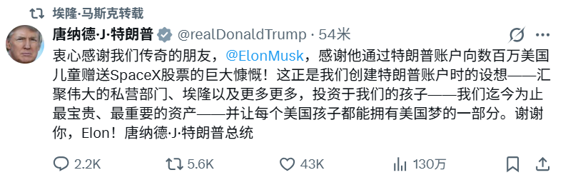
背景与关键数据
- 数字推算：7300 万 × 147 美元 ≈ 107 亿美元；对比 7 月 SpaceX 总裁肖特韦尔夫妇承诺的 200 万股（约 3.2 亿美元，按 160.42 美元/股）。注意股价：从 7 月的 160.42 美元到现在约 147 美元，下跌约 8%。（计算为我补充。）
- "特朗普账户"（Trump Accounts）：是 2025 年美国联邦法案设立的儿童投资账户，新生儿等符合条件的孩子可得到政府种子资金，账户中的钱投资于美国股票类基金，成年后才能动用。已有富豪（如戴尔夫妇，据报道在 2025 年底宣布捐出数十亿美元）向这类账户捐款。肖特韦尔夫妇的赠股针对 11–17 岁、低收入家庭的孩子。（背景为我补充，具体细节以官方信息为准。）
- 持股比例：马斯克持有的 SpaceX 股份有多少、一股送多少对他的占比，帖里没有给出，所以无法精确判断"他自己损失多少"。
图片解读
- 图 1：马斯克推特截图（2026-10-19 晚 8:52，点赞约 48 万）："Next year, I will give one of my SpaceX shares to every kid in America. This will be the first of many."（明年，我将送给美国每个孩子一股我的 SpaceX 股票。这只是第一步。）
- 图 2：特朗普转发并回复的截图（中文翻译版）：感谢"传奇的朋友 @ElonMusk"通过特朗普账户向数百万美国儿童赠送 SpaceX 股票，"这正是我们创建特朗普账户时的设想——汇聚伟大的私营部门、埃隆以及更多人，投资于我们的孩子……让每个美国孩子都能拥有美国梦的一部分"，落款唐纳德·J·特朗普总统。互动数据：约 130 万次浏览、4.3 万点赞。
为什么重要 / 对市场和经济的含义
- 这是一次"把股权分给大众"的象征性事件：它把"超级富豪的上市公司股权"与"全民持股"绑定，有助于让下一代美国人成为股东，对 SpaceX 的品牌、政治关系、散户基础都有加分。
- 对市场层面的启示：SpaceX 已上市且股价有明显波动（160→147），政策、名人效应都会影响情绪；同时意味着未来可能有大量零散账户持有，形成"忠诚散户盘"。（推测）
- Jason 把它放在"其他国家经济"标签里，可能是想提示：美国的政策工具和市场工具是"私人资本 + 公共账户"相结合，与中国前面几帖谈的"增加居民财产性收入"形成对照。（推测）
延伸知识
- 全民持股 / 儿童债券（Baby Bonds）：一个国家想让低收入家庭积累财富，常用办法是出生时给孩子开一个账户、国家放入"种子资金"，长期投资后成年时取出。英国 2002–2011 年曾有"儿童信托基金（Child Trust Fund）"，类似思路。
- 股权公益的象征意义：赠股的实质价值（每人 147 美元）不大，但"每个孩子都是股东"的符号意义很大，类似"让你对这家公司有参与感"。
帖 13 · 2026-10-19 14:39（美西）· 标签：#金融
：美国对伊朗的海上封锁已经把伊朗最大的出口码头"饿"成了空港，伊朗原油退出市场，中国炼厂被迫去抢别家的油，推高油价和油轮运费。读全文收起
帖子原文
bloomberg： 伊朗主要石油装运码头已经连续数周没有油轮停靠。这进一步表明，美国海军对伊朗实施的海上封锁正在严重压制德黑兰的石油出口。这是自今年2月美伊战争爆发以来，该岛持续时间最长的一次石油装运活动停滞。船舶追踪数据显示，截至今年4月的一年里，伊朗累计出口了近6.5亿桶原油，其中绝大部分最终流向中国。如今，随着伊朗原油逐渐从全球市场消失，中国炼油企业不得不转向其他原油供应来源。这意味着中国炼油厂需要与其他国际买家争夺有限的原油资源及运输船舶。这种竞争已经推高了国际油价，并推动油轮运费出现历史性上涨行情。 标签：#金融
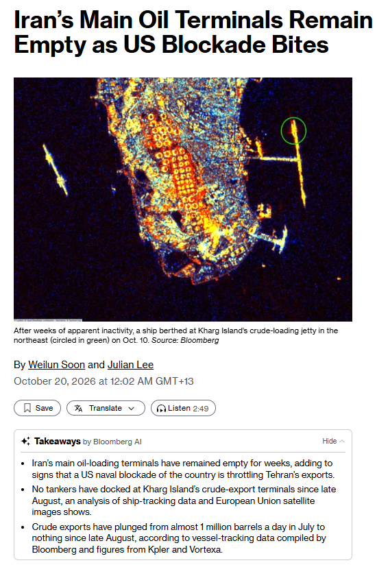
背景与关键数据
- 数据：截至今年 4 月的 12 个月，伊朗出口近 6.5 亿桶原油（平均每天约 178 万桶），"绝大部分"到了中国。
- 现状：根据图片里 Bloomberg AI 的要点，哈尔克岛（Kharg Island）的原油装运码头自 8 月底以来没有油轮靠泊；伊朗原油出口从 7 月的近 100 万桶/日，降到 8 月底以来的基本为零（数据来自彭博整理的船舶追踪数据，以及 Kpler、Vortexa）。
- 逻辑链：封锁 → 伊朗原油出口 ≈ 0 → 中国炼厂（尤其独立炼厂）失去折价油源 → 转而采购其他产地的油 → 与其他买家竞争现货和油轮 → 油价上升、油轮运费创历史新高。
- 帖中提到的"美伊战争自 2 月爆发""美国海军封锁"都是该彭博报道的内容，本报告没有独立核实。
图片解读
- 彭博报道截图：标题"伊朗主要石油码头依旧空空如也，美国封锁见效（Iran's Main Oil Terminals Remain Empty as US Blockade Bites）"，作者 Weilun Soon 和 Julian Lee，发布于 2026-10-20 凌晨。主图是卫星图：哈尔克岛（夜光图，黄色橙色是岛上设施），绿色圆圈标出东北方向原油装船码头上的一艘船（10 月 10 日靠泊，图注称"在数周明显停摆之后"）。这说明码头并非绝对为零动静，是否装油、装了多少，帖里没有说明（我无法判断）。下面的"Takeaways（要点）"与上述数据一致。
为什么重要 / 对市场和经济的含义
- 对油价：伊朗出口萎缩使全球供应减少一块，买家（特别是中国）转向其他来源，抬高了替代原油的需求。具体油价水平、涨幅帖里没有给出，需要看实时行情。
- 对中国：中国是伊朗油的最大买家。切断后，炼厂成本抬升，若油价和运费持续高位，也会通过 PPI（生产者价格）传导，这与帖 15 提到的"PPI 回升推高名义 GDP"有一定呼应（推测，这是我加的一个联想）。
- 对地缘与美元体系：封锁这类金融/军事手段有效性的提高，会促使更多国家关注"去美元结算"（见帖 16 人民币支付份额）。
延伸知识
- 制裁油折价：伊朗、俄罗斯被制裁的原油，通常以低于 Brent 的价格卖给少数买家，买家获得折价但承担制裁风险。一旦这条渠道关闭，买家必须回到"正常市场"竞价，价格上涨的力度就取决于供给能否迅速补上。
- 另类数据（Alternative Data）：这篇报道依赖卫星图像、船舶 AIS 追踪等"另类数据"，比官方统计更及时；这也是现代宏观分析越来越依赖的方向。
帖 14 · 2026-10-19 14:49（美西）· 标签：#其他国家经济
：大众汽车传出要把工资冻结到 2030 年，同时德国总理默茨说欧盟 27 国一致同意要回应"贸易失衡、产能过剩、补贴、被低估的货币"（矛头隐指中国）；欧洲正同时面对经济疲软、社会不满和对俄安全压力。读全文收起
帖子原文
zerohedge： 陷入困境的大众计划冻结工资至2030年；德国默茨周一在柏林接受彭博电视台采访时表示，欧洲有能力发挥自身优势，摆脱当前的经济疲软局面。他再次强调，德国政府将推动人工智能等领域的投资，并对德国社会福利制度进行全面改革。默茨发表上述讲话之际，法国及其他欧盟成员国正受到生活成本抗议浪潮的冲击。默茨将社会动荡归因于移民问题和政治两极分化，同时指出，物价高企以及对未来的不确定感，正在成为推动欧洲极端政治力量崛起的重要因素。针对德国选择党提出的退出欧元区主张，默茨表示，他将采取一切必要措施，确保德国继续成为欧洲货币体系的核心支柱。默茨还特别强调了欧盟领导人上周达成的一项协议。他表示，欧盟领导人在采取行动的问题上表现出的团结程度令他感到意外。"27个成员国的国家元首或政府首脑都表达了非常明确的立场：我们必须对贸易失衡、产能过剩、补贴以及被低估的货币作出回应。" 同时，他警告欧洲各国，不应对俄罗斯带来的危险掉以轻心。"俄罗斯正在试图破坏整个欧洲大陆的政治秩序。"默茨指出，包括德国民众在内的许多欧洲人，仍然没有充分认识到俄罗斯带来的威胁。"俄罗斯的目标不仅仅是在乌克兰获得领土。他们害怕民主，害怕开放社会，也害怕欧洲一体化取得成功。"默茨还表示，德国以及其他欧洲国家和非美国盟友，正在为乌克兰提供资金，支付国防和军事装备开支，而华盛顿没有提供相应的财政支持。默茨表示，每次与特朗普会面时，他都会试图说服美国总统，支持欧洲稳定同样符合美国自身的利益。 标签：#其他国家经济
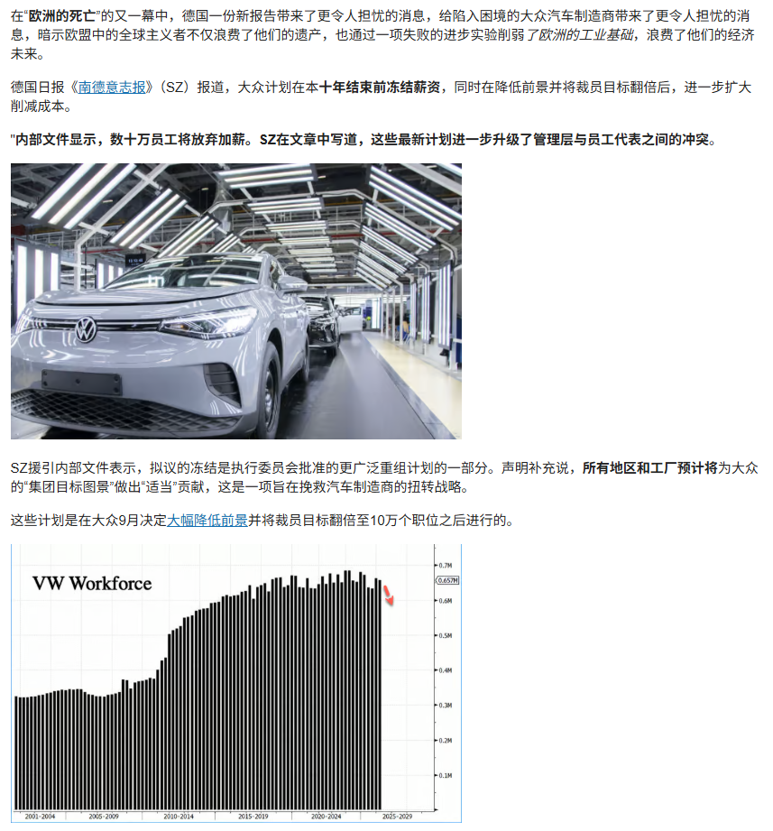
背景与关键数据
- 来源提示：原帖来自 ZeroHedge（美国金融博客，标题党和悲观叙事色彩较重），其中"欧洲之死"是该站的措辞；大众冻薪的事实基础来自德国《南德意志报》（SZ）对内部文件的报道，建议当作"线索"而非定论。
- 大众：9 月已决定大幅下调前景并把裁员目标翻倍到 10 万个岗位；新计划是让数十万员工放弃加薪，把工资冻结到本十年末（2030），并要求所有地区和工厂对"集团目标图景"作出"适当"贡献，劳资冲突进一步升级。
- 默茨的核心表态：① 欧洲能靠自身优势走出疲软，推动 AI 等领域投资、改革社会福利；② 社会动荡的原因包括移民、极化、物价和对未来的不确定；③ 拒绝德国选择党（AfD）的"退出欧元区"主张；④ 欧盟峰会上 27 国一致同意要应对"贸易失衡、产能过剩、补贴、被低估的货币"；⑤ 警告俄罗斯威胁；⑥ 欧洲在为乌克兰、国防买单，美国没有相应出钱。
图片解读
- 图：ZeroHedge 文章截图。上半部分是大众工厂电动车生产线的照片和 SZ 报道摘要（"数十万员工将放弃加薪"）；下半部分是图表"VW Workforce（大众员工人数）"：从 2001 年前后约 33 万人，上升到 2010–2014 年大幅增长，2015–2024 年一直在 60 万人以上，最近约 65.7 万（0.657M），红色向下箭头指向未来的下降。读法：大众的人员规模在 20 年里翻了一倍，现在要缩回来。
为什么重要 / 对市场和经济的含义
- 这是帖 7 的"另一面"：欧盟把"低价制造品大量涌入、产能过剩"当作主要经济威胁，所以对中国的汽车、电池、光伏等设限；而德国的龙头制造业自己正在痛苦重组，政治上更需要"保护本土就业"，这降低了欧盟对中国让步的空间。
- 对中国：出口依赖度高的行业（汽车、电池、光伏、机械）面对的外部环境收紧；这就是帖 2 中"出口强、内需弱"的结构面临外部反弹的原因。
延伸知识
- 德国的"共同决策"（Mitbestimmung）：大公司的监事会里有一半席位属于员工代表，大众更特别——下萨克森州政府持有约 20% 投票权。因此裁员、冻薪不是老板一句话，而要经过劳资和政府的长期谈判，这也是大众重组格外缓慢的原因。
- "产能过剩（Overcapacity）"与"被低估的货币"：前者指一国产量大于本国需求，只能靠出口消化；后者指汇率被认为低于合理水平，让出口品更便宜。欧盟这次强调这两点，实际上是在为未来的关税、配额、保障措施做政治铺垫。
帖 15 · 2026-10-19 15:24（美西）· 标签：#经济数据
：国家说要"显著提高居民消费占 GDP 的比重"，但今年这个比重不升反降；同时房地产销售（居民最大财富）也在继续萎缩。读全文收起
帖子原文
Paul Cavey： 中国当前的五年规划提出，要"显著提高居民消费占国内生产总值（GDP）的比重"。然而，迄今为止，这一目标几乎没有取得明显进展。尽管生产者价格指数（PPI）回升推动了名义GDP增长，但居民消费支出增速仍维持在较低的个位数水平。结果是，今年以来，居民消费占GDP的比重实际上不升反降。 标签：#经济数据
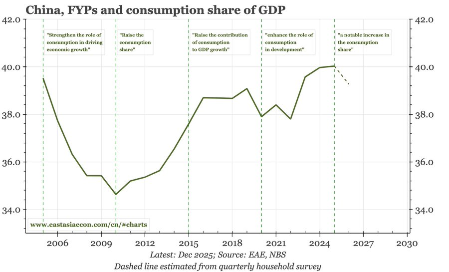
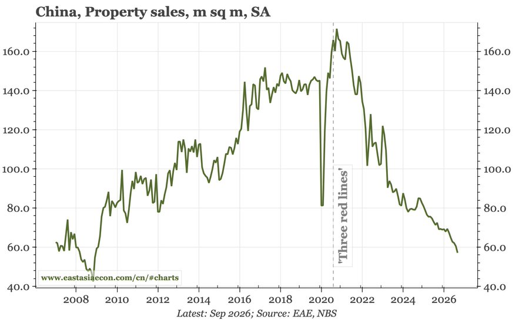
背景与关键数据
- 居民消费占 GDP 比重：衡量"居民自己买东西、花钱的总额"相对于全国 GDP 的比例。比重低，说明经济增长更靠投资和出口。
- 名义 GDP vs 实际 GDP：名义 GDP 包含价格变化。PPI（工厂出厂价格）回升会推高名义 GDP（产品卖得更贵了），但居民消费增速只有"低个位数"，增得没有 GDP 快，于是消费/GDP 比重被"稀释"下降。
- 图中水印 www.eastasiaecon.com 表示这是 East Asia Economics（EAE）的图表，来源为 EAE 与国家统计局；Paul Cavey 是长期跟踪中国宏观的经济学家，这些图表应出自他的研究（推测，帖子没有明说）。
图片解读
- 图 1：China, FYPs and consumption share of GDP（中国五年规划与消费占 GDP 的比重）。折线是居民消费占 GDP 的比重（百分比），竖虚线标出每个五年规划的起点及其对消费的表述：
- 2005：强调"消费在经济增长中的作用"→ 但此后比重从约 39.5% 一路降到 2010 年的约 34.6%；
- 2010：提出"提高消费比重"→ 之后回升，至 2016 年约 38.7%；
- 2015：提出"提高消费对 GDP 增长的贡献"→ 2019 年约 39.1%，2020–2022 因疫情和房地产回落至约 37.8%–38.4%；
- 2020：提出"增强消费在发展中的作用"→ 2023 年反弹到约 39.6%，2024–2025 约 40.0%（最后一个实线点，数据截至 2025 年 12 月）；
- 2025：提出"显著提高消费比重"→ 虚线（根据季度住户调查估算的 2026 年）降到约 39.3%。
- 读法：二十年来每个五年规划都在"强调消费"，但比重大部分时间在 35%–40% 的低位徘徊；而 2026 年的估算是不升反降。
- 图 2：China, Property sales, m sq m, SA（商品房销售面积，百万平方米，季调）。2007 年约 60，之后大幅上升，2016–2020 年在约 140–150 的平台，2020 年初疫情一度砸到约 81，然后在 2021 年初冲到约 170 的峰值，并标注了"三道红线"（2020 年 8 月起监管部门对开发商的融资限制）；此后一路跌，到 2026 年 9 月约 57，已低于 2007 年水平，接近 2008 年金融危机的低点（约 47–48）。读法：销售量较峰值下降约三分之二。
- 第二张图正文没有解释，我的理解是：Jason 想用它说明居民资产（主要是房子）的价值与交易量持续下降，是消费弱的另一个根源（推测）。
为什么重要 / 对市场和经济的含义
- "重要目标 + 无实质进展"是今天一系列帖子的政策悬念：既然 2026 年没有明显改善，按花旗的逻辑（帖 3），2027 年要么出台更实质的刺激，要么承认转型更慢。
- 对资产：如果消费占比长期偏低，消费类公司盈利增速也难跑赢整体经济；若政策真的发力，则消费板块和服务业是最直接的受益者（但帖里没有这个结论，这是我的推演）。
延伸知识
- 消费占 GDP 的国际比较：美国居民消费占 GDP 约 68%，日本约 55%，中国只有约 40%（居民消费口径）。这反映的是中国投资率高、居民收入占比低、社会保障覆盖有限等结构问题。
- 名义 vs 实际：很多经济数据的"口径之争"源于是否剔除价格因素；在通缩期，名义数字往往比实际数字更低；在 PPI 回升期，则相反。看比重变化时要问"分子分母是否同口径"。
帖 16 · 2026-10-19 16:37（美西）· 标签：#金融
：央行行长潘功胜说：按 SWIFT 口径，人民币在全球支付中只占约 3%–4%（第五）；若把 CIPS 和银行内部网络也算进来，则约 6%–7%（第三）。读全文收起
帖子原文
潘功胜： 根据环球银行金融电信协会（SWIFT）的数据，人民币在全球支付中的份额约为3%—4%，排名世界第五。 但如果采用更广泛的统计口径，将通过人民币跨境支付系统（CIPS）以及银行内部网络处理的交易纳入计算，人民币的全球支付份额则达到6%—7%，排名世界第三。 标签：#金融
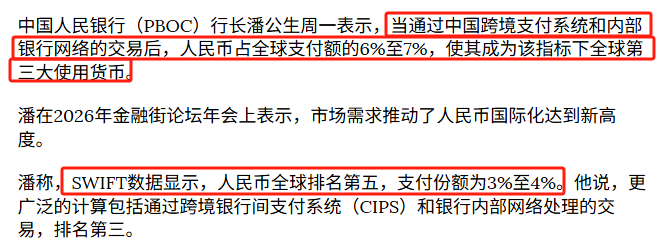
背景与关键数据
- SWIFT：全球银行间报文系统，传递支付指令；SWIFT 月度排名是常见的"货币支付份额"参照。它只统计通过 SWIFT 发出的报文。
- CIPS（人民币跨境支付系统）：中国 2015 年上线的人民币清算系统，不经 SWIFT 也可处理人民币跨境结算。
- 银行内部网络：同一家银行（或同一集团）内部不同分行之间的人民币划转，也不走 SWIFT。
- 所以 6%–7% 的口径更"宽"：把 SWIFT 之外的人民币支付也算入，但与其他货币（如美元的 CHIPS、Fedwire 等）是否同口径比较，需要谨慎。
图片解读：图片是该新闻的中文截图，红框标出三句关键话："人民币占全球支付额的 6% 至 7%，使其成为该指标下全球第三大使用货币""SWIFT 数据显示，人民币全球排名第五，支付份额为 3% 至 4%""更广泛的计算包括通过跨境银行间支付系统（CIPS）和银行内部网络处理的交易，排名第三"。原文还提到潘功胜在2026 年金融街论坛年会上表示，"市场需求推动了人民币国际化达到新高度"。
为什么重要 / 对市场和经济的含义
- 这是在用"换一个口径"讲述人民币国际化的进展：政策层希望市场把人民币看作一个正在崛起的国际货币。同时也说明官方也承认，在最常用的 SWIFT 口径下，人民币份额只有 3%–4%，距离美元（接近半数）仍很远（我补充的背景）。
- 与帖 13 联系：当美国能通过海上封锁、金融制裁限制国家的石油贸易，非美元结算体系（如 CIPS）的战略价值上升（推测）。
延伸知识
- 国际货币的三大职能：交易媒介（用来结算）、计价单位（用来标价，如石油用美元标价）、储藏手段（央行储备）。人民币在"支付结算"这项上推进较快，但在"储备"（IMF 统计里约 2%）和"计价"方面仍然落后。
- 统计口径问题：同一个事物，换一个"分母"和"覆盖范围"，数字就能从 3% 变成 7%；读新闻里的"排名第 X"时，一定要问口径是什么、是否同口径可比。
帖 17 · 2026-10-19 17:34（美西）· 无标签 · 9 张图
：Jason 用电视剧《雍正王朝》第 22 集的截图，讲雍正刚上位就下诏"限期两年清理各省亏空，否则革职拿问"，拿古代的"清欠、化债"类比今天的"化债"。读全文收起
帖子原文
第22集，雍正上位，开始化债
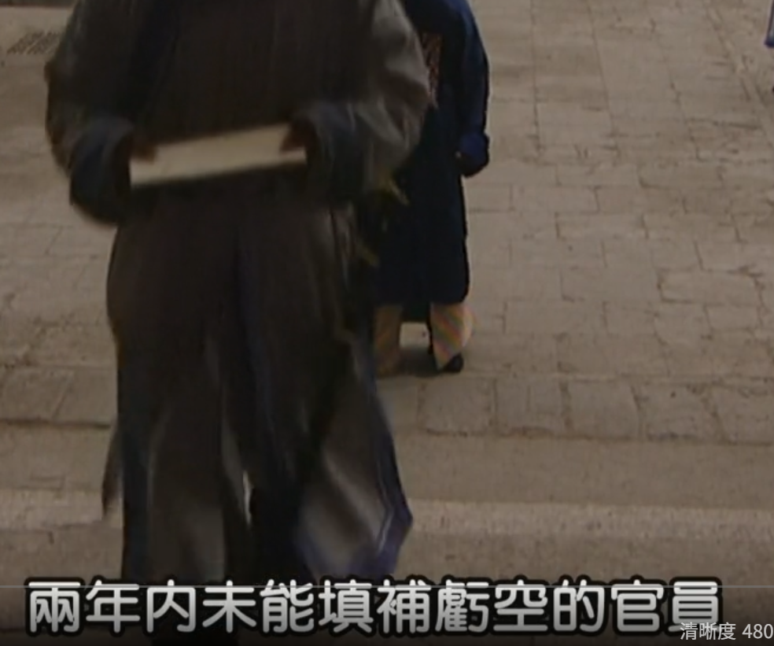
背景与关键数据
- **《雍正王朝》**是 2001 年的央视历史剧，围绕康熙晚年夺嫡到雍正推行新政。第 22 集是雍正登基后推行"清理亏空"的开端（弹幕里有人吐槽"演了 22 集才开始雍正的王朝"，说明前 21 集主要是康熙末年的情节）。
- 剧情要点（来自字幕截图）：朝廷发出一道明诏，"责令各省清理藩库亏空，限期两年清完；两年内未能填补亏空的官员，一律革职拿问；凡在限期内提前完成清理亏空的……"（下文被截断）；有官员说"一个省竟然亏空了三百多万库银"；另一幕里主持者宣布，"……落在诸位的头上，每人至少要出十万以上"（字幕只截到这些，前后因果以剧情为准）。藩库是各省布政使司管理的省级财政库房。
- 历史对照：康熙晚年吏治宽松，各级官府（尤其户部和各省藩库）普遍存在钱粮亏空；雍正即位后设立会考府（由其弟怡亲王允祥主持）清查钱粮，史书中常见的表述是限期追补（剧中为两年，史料中常见"限三年"的说法），拿不出钱的官员要被革职、抄家、追赔。据常见的说法，康熙去世时户部库银只有约 800 万两上下，到雍正末年增至约 6000 万两以上（各书数字略有出入）。
- 配套改革：雍正没有只靠"抓人追钱"，还搞了火耗归公（把地方官私下加收的损耗银收归官府统一管理）和养廉银（给官员发放高额的"廉洁津贴"），目的是堵住亏空的源头，而不仅是还旧账。
图片解读
- 图 1–2、图 6：太监/侍卫和官员站在宫门前台阶下，字幕分别是"同时 朝廷发出一道明诏""责令各省清理藩库亏空""凡在限期内提前完成清理亏空的"。左上角"雍正王朝 22"、播放条 04:52 / 44:48、"清晰度 480P"说明是在视频网站上截的图；图 1 右上角的弹幕"他只是不贪（财）"、图 3 左上角弹幕"他只是不贪财，但是贪名"，更像是观众在评价那位放任亏空以博取"仁政"美名的先帝（推测）。
- 图 3–5：字幕"限期 两年清完""两年内未能填补亏空的官员""一律革职拿问"，传递的是"硬约束+问责"。
- 图 7：两位官员低头站立，字幕"一个省竟然亏空了三百多万库银"，展示亏空规模。
- 图 8–9：朝堂上众官员低头肃立，主持者站在鹤与旭日的屏风前讲话，字幕"落在诸位的头上""每人至少要出十万以上"，弹幕"演了22集才开始雍正的王朝啊"。
为什么重要 / 对市场和经济的含义
- Jason 的用意（推测，帖子没明说）：今天前面 16 帖都在讲财政压力、地方债、房地产——"开始化债"这几个字暗示他想拿历史类比今天的地方政府隐性债务化解：先设硬约束、限期处理、问责，再配套改革增收机制。
- 与帖 7（出口退税下调反映财政压力）、帖 18（追缴离岸信托税）相联系："清欠"的终点往往是"找钱"，也就是增加税收、压缩补贴，这些都是对经济的紧缩性力量。
延伸知识
- 今天的"化债"：2024 年 11 月全国人大常委会批准的一揽子化债方案，核心是用约 10 万亿元的额度把地方隐性债务"置换"成透明的、利率更低的政府债券（其中 6 万亿通过提高地方政府债务限额，另 4 万亿通过 5 年内每年 8000 亿元的专项债，另外 2029 年及以后到期的约 2 万亿元隐性债务按原合同偿还）。关键是把"债务展期/降息"当成时间换空间，而不是一次性清零。
- 预算软约束（Soft Budget Constraint）：科尔奈提出，如果负责人知道"出了事上级会兜底"，就会不断超支借钱。雍正时期的"革职拿问"，今天的"终身问责""严禁新增隐性债务"，都是在把约束硬化。
帖 18 · 2026-10-19 18:37（美西）· 标签：#TAX
：中国税务部门要求中国税收居民对通过海外信托获得的收益缴 20% 的税，截止日 10 月 22 日；彭博统计有 8 位中国富豪相关持股价值约 1402 亿美元，可能受到影响。读全文收起
帖子原文
bloomberg： 多年来，许多中国企业家一直采用同一种策略，保护自己的财富免受税务机关追缴：在中国境内建立一家成功的企业，将其推向国际资本市场上市，然后把数十亿美元的财富留在境外。但如今，这条道路已经不再可行。今年7月，中国税务部门宣布，将开始对中国税收居民通过海外信托获得的收益执行20%的税收征管。获得此类收入的人士必须在10月22日之前完成税款的核算、申报和缴纳，才能免于处罚。根据彭博亿万富豪指数（Bloomberg Billionaires Index），全球最富有的500人中，有8位中国富豪及其受益人可能受到此次政策执行的重大影响。截至上周五，这8位富豪通过相关架构持有的资产总价值约为1402亿美元。 Dentons Rodyk律师事务所合伙人Linda Bai长期为中国超级富豪提供信托及税务架构方面的咨询。她表示："所有人都大吃一惊。"Bai表示，她的许多客户最初都没有预料到此次税收征管行动，但很快开始准备缴税，并深入研究具体的技术性问题。例如，哪些费用可以作为税前扣除项目？Bai拒绝透露这些客户的身份。她指出，富豪们逐渐意识到，税务机关可以利用公开的IPO招股文件、企业收购公告等资料，相互交叉验证，从而估算他们应当缴纳的税款。她说："你根本逃不掉。" 标签：#TAX
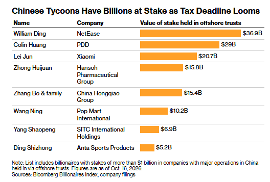
背景与关键数据
- 老办法：企业家在境内做成企业，把公司推向境外上市，再通过离岸信托持有股权，财富留在境外，传统认知是"信托里的钱不算个人收入、不用向中国缴税"。
- 新动作：今年 7 月税务部门宣布，将对中国税收居民通过海外信托取得的收益按 20% 征收（这是个人所得税中财产转让、股息红利所得的常见税率），须在 10 月 22 日前完成核算、申报、缴税，才能免于处罚。
- 重要提醒：1402 亿美元是"相关持股的市值"，不等于税款。税款要按"收益"算 20%，比如分红、股权转让所得，而不是对整个资产价值征 20%。
- 税务机关的"取证办法"：用公开的 IPO 招股书、并购公告等公开信息交叉验证，估算应缴税款——律师的原话是"你根本逃不掉"。
图片解读
- 彭博图表《中国富豪在税务截止日临近时手握数十亿美元（Chinese Tycoons Have Billions at Stake as Tax Deadline Looms）》：横向条形图，列出通过离岸信托持有的股权价值：
- 丁磊（网易）约 369 亿美元；
- 黄峥（拼多多/PDD）约 290 亿美元；
- 雷军（小米）约 207 亿美元；
- 钟慧娟（翰森制药）约 158 亿美元；
- 张波及家族（中国宏桥）约 154 亿美元；
- 王宁（泡泡玛特）约 102 亿美元；
- 杨绍鹏（海丰国际/SITC）约 69 亿美元；
- 丁世忠（安踏体育）约 52 亿美元。
- 合计约 1401 亿美元，与正文的 1402 亿美元一致。图注：名单包括在以中国为主要业务的公司中、通过离岸信托持股超过 10 亿美元的亿万富豪，数据截至 2026 年 10 月 16 日，来源为彭博亿万富豪指数和公司公告。
- 读法：多家大型公司（网易、拼多多、小米、泡泡玛特、安踏等）的创始人持股都在这份名单中，上榜公司基本都在香港或美国上市。
为什么重要 / 对市场和经济的含义
- 对财政：与帖 7（出口退税降低）、帖 17（"化债"）相呼应——财政压力→加强征管，把此前"税收漏洞"补上。
- 对资本市场（推测）：创始人要筹现金缴税，可能通过分红、质押融资或减持来实现；这些行为对相关股票有潜在的短期影响，但具体怎么做、影响多大，帖里没有信息，不要当成结论。
- 对"财富外流"：这是对"把财富留在境外"路线的实质性封堵，也向其他高净值人群传递了"离岸安排不再是避风港"的信号。
延伸知识
- 税收居民 & 全球征税：很多国家（包括中国）对"税收居民"的全球所得征税；"居民"通常看你在该国居住的天数（中国是满 183 天）或有永久居所。离岸信托、离岸公司的好处是"收益留在境外"，但如果被认定为你实际控制，就可能被"穿透"到个人头上。
- CRS（共同申报准则）：2018 年起中国与一百多个国家和地区进行金融账户涉税信息自动交换。所以你的海外账户信息，其实各国税局会自动共享——这就是律师说"你根本逃不掉"的底层原因。
今日全图索引
| 帖号 | 时间（美西） | 主题 | 标签 | 图片文件名 |
|---|---|---|---|---|
| 1 | 10-19 12:45 | Jason 自制图：收入中位数/平均数、消费/收入下降 | #自制图表 | post1_img1.png, post1_img2.png |
| 2 | 10-19 13:17 | 高盛：三季度 GDP 略超预期但外强内弱，全年上调至 4.6% | #经济数据 | post2_img1.png |
| 3 | 10-19 13:22 | 花旗：2026 达标、2027 更难；城镇储蓄率 39.2% | #经济数据 | post3_img1.png |
| 4 | 10-19 13:27 | 摩根大通：房地产活动低迷，政策放松效果有限 | #房价 | post4_img1.png |
| 5 | 10-19 13:31 | 花旗：上海二手房转正，核心城市 2027 或为拐点 | #房价 | post5_img1.png, post5_img2.png |
| 6 | 10-19 13:35 | 高盛：二手房跌速略快，租金回落，租金收益率持平 | #房价 | post6_img1.png, post6_img2.png |
| 7 | 10-19 13:45 | 高盛专家会：汽车出口退税、欧盟保障措施、行业整合 | #政策分析 | post7_img1.png |
| 8 | 10-19 14:00 | 摩根大通：增长回升但复苏脆弱（K 型） | #经济数据 | post8_img1.png |
| 9 | 10-19 14:07 | 摩根大通：一线城市二手房，三个口径三种结论 | #房价 | post9_img1.png, post9_img2.png |
| 10 | 10-19 14:12 | 彭博：沪深 300 连跌 10 周，国家队 ETF 资金流入 | #A股 | post10_img1.png |
| 11 | 10-19 14:30 | 彭博/高盛：对冲基金创纪录减持科技股 | #股市 | post11_img1.png |
| 12 | 10-19 14:36 | 马斯克：明年给美国每个孩子一股 SpaceX | #其他国家经济 | post12_img1.png, post12_img2.png |
| 13 | 10-19 14:39 | 彭博：伊朗主要原油码头空置，美国封锁见效 | #金融 | post13_img1.png |
| 14 | 10-19 14:49 | ZeroHedge：大众冻薪至 2030、默茨谈欧洲 | #其他国家经济 | post14_img1.png |
| 15 | 10-19 15:24 | Paul Cavey：居民消费占 GDP 比重不升反降 | #经济数据 | post15_img1.png, post15_img2.png |
| 16 | 10-19 16:37 | 潘功胜：人民币全球支付份额 3%–4% vs 6%–7% | #金融 | post16_img1.png |
| 17 | 10-19 17:34 | 《雍正王朝》第 22 集：清理亏空 ≈ 化债类比 | （无） | post17_img1.png … post17_img9.png（共 9 张） |
| 18 | 10-19 18:37 | 彭博：富豪离岸信托补税 20%，截止 10 月 22 日 | #TAX | post18_img1.png |